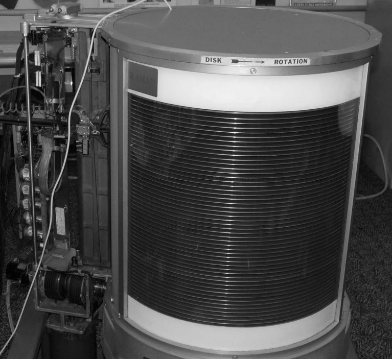

Современная цивилизация без компьютеров невозможна
-
Первый жёсткий диск
Первый жёсткий диск создавали в компании IBM по заказу американских ВВС. Согласно условиям контракта, компания должна была создать картотеку на 50 000 позиций и обеспечить мгновенный доступ к каждой из них. Задание было выполнено за неполных два года.
В результате 4 сентября 1956 года публике был представлен полутораметровый шкаф высотой 1,7 метра и весом почти в тонну, именовавшийся IBM 350 Disk Storage Unit. Первый в мире винчестер содержал в себе 50 дисков диаметром 61 сантиметр и вмещал 3,5 Мб данных.